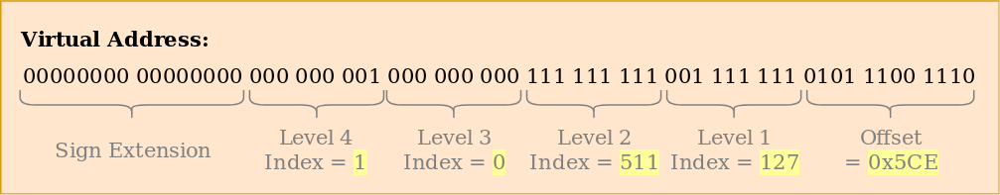

مقدمهای بر صفحهبندی
محتوای ترجمه شده: این یک ترجمه از جامعه کاربران برای پست Introduction to Paging است. ممکن است ناقص، منسوخ شده یا دارای خطا باشد. لطفا هر گونه مشکل را در این ایشو گزارش دهید!
ترجمه توسط @hamidrezakp و @MHBahrampour.
در این پست صفحهبندی، یک طرح مدیریت حافظه بسیار رایج که ما نیز برای سیستمعامل خود استفاده خواهیم کرد، معرفی میشود. این پست توضیح میدهد که چرا ایزوله سازی حافظه مورد نیاز است، قطعهبندی چگونه کار میکند، حافظه مجازی چیست و چگونه صفحهبندی مشکلات تقسیم حافظه را حل می کند. همچنین طرح جدولهای صفحه چند سطحی را در معماری x86_64 بررسی میکند.
این بلاگ بصورت آزاد روی گیتهاب توسعه داده شده است. اگر شما مشکل یا سوالی دارید، لطفاً آنجا یک ایشو باز کنید. شما همچنین میتوانید در زیر این پست کامنت بگذارید. منبع کد کامل این پست را میتوانید در بِرَنچ post-08 پیدا کنید.
فهرست مطالب
🔗محافظت از حافظه
یکی از وظایف اصلی یک سیستمعامل جداسازی (ایزوله کردن) برنامهها از یکدیگر است. به عنوان مثال، مرورگر وب شما نباید در کار ویرایشگر متن تداخلی ایجاد کند. برای دستیابی به این هدف، سیستمعاملها از قابلیتی سختافزاری استفاده کرده تا اطمینان حاصل کنند که حافظه مربوط به یک پروسه، توسط پروسهای دیگر غیر قابل دسترس است. رویکردهای مختلفی وجود دارد که به سختافزار و پیادهسازی سیستم عامل بستگی دارد.
به عنوان مثال، برخی از پردازندههای ARM Cortex-M (برای سیستمهای تعبیه شده استفاده میشوند) دارای یک واحد محافظت از حافظه (Memory Protection Unit: MPU) هستند، که به شما این امکان را میدهد که تعداد کمی از ناحیه حافظه (مانند 8) را با مجوزهای دسترسی متفاوت تعریف کنید (به عنوان مثال عدم دسترسی، فقط خواندنی، خواندنی-نوشتنی). در هر دسترسی به حافظه، MPU اطمینان حاصل میکند که آدرس در ناحیهای با مجوزهای دسترسی صحیح قرار دارد و در غیر اینصورت یک استثنا ایجاد میکند. با تغییر ناحیه و مجوزهای دسترسی در هر تعویض پروسه (ترجمه: process switch)، سیستمعامل میتواند اطمینان حاصل کند که هر پروسه فقط به حافظه خود دسترسی پیدا میکند و بنابراین پروسهها را ایزوله میکند.
در x86، سختافزار از دو روش مختلف برای محافظت از حافظه پشتیبانی میکند: قطعهبندی و صفحهبندی.
🔗قطعهبندی
قطعهبندی قبلاً در سال 1978 برای افزایش میزان حافظهی آدرس پذیر معرفی شده بود. وضعیت در آن زمان این بود که پردازندهها فقط از آدرسهای 16 بیتی استفاده میکردند که باعث کاهش حافظه آدرس پذیر به 64KiB میشد. برای دسترسی بیشتر از این 64KiB، ثباتهای قطعهی اضافی معرفی شدند که هر کدام حاوی یک offset هستند. پردازنده به طور خودکار این آفست را بر روی هر دسترسی به حافظه اضافه میکند، بنابراین حداکثر ۱ مگابایت حافظه قابل دسترسی است.
بسته به نوع دسترسی به حافظه، ثبات قطعه به طور خودکار توسط پردازنده انتخاب میشود: برای دستورالعملهای واکشی (ترجمه: fetching)، از کد CS و برای عملیاتهای پشته (push/pop) پشته قطعه SS استفاده میشود. سایر دستورالعملها ازقطعهی داده DS یا قطعهی اضافه ES استفاده میکنند. بعدها دو ثبات قطعهی اضافی FS و GS اضافه شدند که میتوانند آزادانه مورد استفاده قرار گیرند.
در نسخه اول قطعهبندی، ثباتهای قطعه مستقیماً شامل آفست بودند و هیچ كنترل دسترسی انجام نمیشد. بعدها با معرفی حالت محافظت شده این مورد تغییر کرد. هنگامی که پردازنده در این حالت اجرا میشود، توصیف کنندگان قطعه شامل یک فهرست در یک جدول توصیفکننده محلی یا سراسری هستند - که علاوه بر آدرس آفست - اندازه و مجوزهای دسترسی را نیز در خود دارد. با بارگذاری جدولهای توصیفکننده سراسری/محلی برای هر فرآیند که دسترسی حافظه را به ناحیه حافظه خود فرآیند محدود میکند، سیستمعامل میتواند فرایندها را از یکدیگر جدا کند.
با اصلاح آدرسهای حافظه قبل از دسترسی واقعی، قطعهبندی از تکنیکی استفاده کرده است که اکنون تقریباً در همه جا استفاده می شود: حافظه مجازی.
🔗حافظه مجازی
ایده پشت حافظه مجازی این است که آدرسهای حافظه را از دستگاه ذخیرهسازی فیزیکی زیرین، دور کنید. به جای دسترسی مستقیم به دستگاه ذخیرهسازی، ابتدا مرحله ترجمه انجام میشود. برای قطعهبندی، مرحله ترجمه، افزودن آدرس آفست قطعهی فعال است. تصور کنید یک برنامه به آدرس حافظه 0x1234000 در قطعهای با آفست 0x1111000 دسترسی پیدا کند: آدرسی که واقعاً قابل دسترسی است 0x2345000 است.
برای تمایز بین دو نوع آدرس، به آدرسهای قبل از ترجمه مجازی و به آدرسهای بعد از ترجمه فیزیکی گفته میشود. یک تفاوت مهم بین این دو نوع آدرس این است که آدرسهای فیزیکی منحصربهفرد هستند و همیشه به همان مکان حافظه متمایز اشاره دارند. از طرف دیگر آدرسهای مجازی به تابع ترجمه بستگی دارد. کاملاً ممکن است که دو آدرس مجازی مختلف به همان آدرس فیزیکی اشاره داشته باشند. همچنین، آدرسهای مجازی یکسان میتوانند هنگام استفاده از توابع ترجمه مختلف، به آدرسهای فیزیکی مختلفی مراجعه کنند.
برای مثال هنگامی که میخواهید یک برنامه را دو بار بصورت موازی اجرا کنید، این خاصیت مفید است.

در اینجا همان برنامه دو بار اجرا میشود ، اما با تابعهای ترجمه مختلف. نمونه اول دارای آفست قطعه 100 است، بنابراین آدرسهای مجازی 0–150 به آدرس های فیزیکی 100–250 ترجمه میشوند. نمونه دوم دارای آفست قطعه 300 است، که آدرسهای مجازی 0–150 را به آدرسهای فیزیکی 300–450 ترجمه میکند. این به هر دو برنامه این امکان را میدهد تا بدون تداخل با یکدیگر کد یکسانی را اجرا کنند و از آدرسهای مجازی یکسان استفاده کنند.
مزیت دیگر این است که برنامهها میتوانند در مکانهای حافظه فیزیکی دلخواه قرار بگیرند، حتی اگر از آدرسهای مجازی کاملاً متفاوتی استفاده کنند. بنابراین، سیستمعامل میتواند از مقدار کامل حافظه موجود بدون نیاز به کامپایل مجدد برنامهها استفاده کند.
🔗تکهتکه شدن
تمایز بین آدرسهای مجازی و فیزیکی قطعهبندی را واقعا قدرتمند میکند. با این حال، مشکل تکهتکه شدن (ترجمه: fragmentation) دارد. به عنوان مثال، تصور کنید که میخواهیم نسخه سوم برنامهای را که در بالا دیدیم اجرا کنیم:

هیچ راهی برای نگاشت کردن نمونه سوم برنامه روی حافظه مجازی بدون همپوشانی وجود ندارد، حتی اگر حافظه آزاد بیش از اندازه کافی در دسترس باشد. مشکل این است که ما به حافظه یکپارچه نیاز داریم و نمیتوانیم از تکههای کوچک استفاده کنیم.
یکی از راههای مقابله با این تکهتکه شدن، وقفه/مکث (pause) در اجرا است، انتقال قسمتهای استفاده شده حافظه به سمت یکدیگر تا این قسمتها به هم بچسبند و فضای تکهتکه شده بین آنها پر شود، سپس به روزرسانی ترجمه و اجرای مجدد آن است:

اکنون فضای یکپارچه کافی برای شروع نمونه سوم برنامه ما وجود دارد.
نقطه ضعف این فرآیند یکپارچهسازی (ترجمه: defragmentation) قطعات این است که نیاز به کپی کردن مقدار زیادی حافظه است که باعث کاهش کارایی میشود. همچنین لازم است قبل از اینکه حافظه بیش از حد تکهتکه شود، این کار به طور منظم انجام شود. این باعث میشود کارایی غیرقابل پیشبینی باشد، زیرا برنامهها به طور تصادفی دچار وقفه میشوند و ممکن است ناپاسخگو (ترجمه: unresponsive) شوند.
مشکل تکهتکه شدن یکی از دلایلی است که قطعهبندی دیگر توسط اکثر سیستمها استفاده نمیشود. در واقع، قطعهبندی حتی در حالت 64 بیتی روی x86 دیگر پشتیبانی نمیشود. در عوض از صفحهبندی استفاده میشود، که به طور کامل از مشکل تکهتکه شدن جلوگیری میکند.
🔗صفحهبندی
ایده این است که هر دو فضای حافظه مجازی و فیزیکی را به بلوکهای کوچک و با اندازه ثابت تقسیم کنید. بلوکهای فضای حافظه مجازی صفحهها و بلوکهای فضای آدرس فیزیکی قابها نامیده میشوند. هر صفحه را میتوان به صورت جداگانه به یک قاب نگاشت کرد، که باعث میشود ناحیه حافظه بزرگتر در قابهای فیزیکی غیر یکپارچه تقسیم شوند.
اگر مثالِ فضای حافظه تکهتکه شده را خلاصه کنیم، مزیت این امر قابل مشاهده میشود، اما این بار به جای قطعهبندی از صفحهبندی استفاده میکنیم:

در این مثال یک صفحه با اندازه 50 بایت داریم، به این معنی که هر یک از ناحیه حافظه ما در سه صفحه تقسیم شده است. هر صفحه به صورت جداگانه به یک قاب نگاشت میشود، بنابراین میتوان یک منطقه حافظه مجازی یکپارچه را به قابهای فیزیکی غیر یکپارچه نگاشت کرد. که به ما این امکان را میدهد تا نمونه سوم برنامه را بدون انجام هرگونه یکپارچهسازی شروع کنیم.
🔗تکهتکه شدن مخفی
در مقایسه با قطعهبندی، صفحهبندی به جای چند منطقه بزرگ و متغیر، از تعداد زیادی ناحیه حافظه کوچک و ثابت استفاده میکند. از آنجا که هر قاب دارای اندازه یکسانی است، هیچ قابی وجود ندارد که از سایز صفحههای موجود کوچکتر باشد، پس تکهتکه شدن رخ نمیدهد.
یا به نظر میرسد که هیچ تکهتکه شدنی رخ نمیدهد. هنوز یک نوع تکهتکه شدن نخفی وجود دارد، به اصطلاح تکهتکه شدن داخلی. تکهتکه شدن داخلی اتفاق میافتد زیرا همه ناحیه حافظه دقیقاً مضربی از اندازه صفحه نیستند. برنامهای با اندازه 101 را در مثال بالا تصور کنید: هنوز به سه صفحه با اندازه 50 نیاز دارد، بنابراین 49 بایت بیش از حد مورد نیاز اشغال میکند. برای تمایز بین دو نوع تکهتکه شدن، نوعی تکهتکه شدنی که هنگام استفاده از قطعهبندی اتفاق میافتد، قطعهبندی خارجی نامیده میشود.
تکهتکه شدن داخلی تأسف آور است، اما اغلب بهتر از تکهتکه شدن خارجی است که با قطعهبندی رخ میدهد. این هنوز حافظه را هدر میدهد، اما به یکپارچهسازی نیاز ندارد و میزان تکهتکه شدن را قابل پیشبینی میکند (به طور متوسط نیم صفحه در هر منطقه حافظه).
🔗جدول صفحهها
دیدیم که هر یک از میلیونها صفحه بالقوه به صورت جداگانه در یک قاب نگاشت میشوند. این اطلاعات نگاشت باید در جایی ذخیره شود. قطعهبندی برای هر منطقه حافظه فعال از یک ثبات انتخابگرِ قطعهی جداگانه استفاده میکند، که برای صفحهبندی امکان پذیر نیست زیرا صفحات بیشتری نسبت به ثباتها وجود دارد. در عوض صفحهبندی از یک ساختار جدول به نام page table برای ذخیره اطلاعات نگاشت استفاده می کند.
برای مثال بالا، جدولهای صفحه به صورت زیر است:

میبینیم که هر نمونهی برنامه جدول صفحه خاص خود را دارد. یک اشارهگر به جدولی که در حال حاضر فعال است، در یک رجیستر مخصوص CPU ذخیره میشود. در x86، این ثبات CR3 است. وظیفه سیستمعامل این است که قبل از اجرای هر نمونهی برنامه، این رجیستر را با اشارهگر به جدول صفحهی صحیح بارگذاری کند.
در هر دسترسی به حافظه، CPU اشارهگر جدول را از ثبات میخواند و قاب نگاشته شده را برای صفحه قابل دسترسی در جدول جستجو میکند. این کار کاملاً بصورت سختافزاری و کاملاً شفاف برای برنامهی در حال اجرا، انجام میشود. برای سرعت بخشیدن به روند ترجمه، بسیاری از معماریهای CPU حافظه پنهان (ترجمه: cache) ویژهای دارند که نتایج آخرین ترجمهها را به خاطر میسپارد.
بسته به معماری، ورودیهای جدول صفحه همچنین میتوانند ویژگیهایی مانند مجوزهای دسترسی را در فیلد پرچمها ذخیره کنند. در مثال بالا، پرچم “r/w” صفحه را، خواندنی و قابل نوشتن میکند.
🔗جدول های صفحه چند سطحی
جدولهای صفحه ساده که اخیراً دیدیم در فضاهای آدرس بزرگتر مشکل دارند: آنها حافظه را هدر میدهند. به عنوان مثال، برنامهای را تصور کنید که از چهار صفحه مجازی 0، 000_000_1، 050_000_1 و 100_000_1 استفاده کند (ما از _ به عنوان جداکننده هزاران استفاده میکنیم):

این فقط به 4 قاب فیزیکی نیاز دارد، اما جدول صفحه بیش از یک میلیون ورودی دارد. ما نمیتوانیم ورودیهای خالی را حذف کنیم زیرا در این صورت CPU دیگر نمیتواند مستقیماً به ورودی صحیح در فرآیند ترجمه پرش کند (به عنوان مثال، دیگر تضمین نمیشود که صفحه چهارم از ورودی چهارم استفاده کند).
برای کاهش حافظه هدر رفته، میتوانیم از یک جدول صفحه دو سطحی استفاده کنیم. ایده این است که ما از جدولهای صفحه مختلف برای ناحیه آدرس مختلف استفاده میکنیم. یک جدول اضافی با عنوان جدول صفحه level 2 شامل نگاشت بین ناحیه آدرس و جدولهای صفحه (سطح 1) است.
این بهتر است با یک مثال توضیح داده شود. بیایید تعریف کنیم که هر جدول صفحه 1 سطح مربوط به منطقهای با اندازه 000_10 است. سپس جدولهای زیر برای مثال نگاشت بالا وجود دارد:

صفحه 0 در اولین بایت منطقه 000_10 قرار میگیرد، بنابراین از اولین ورودی جدول صفحه سطح 2 استفاده میکند. این ورودی به جدول صفحه 1 سطح T1 اشاره دارد که مشخص می کند صفحه 0 به قاب 0 اشاره میکند.
صفحات 000_000_1 ،050_000_1 و 100_000_1 همگی در منطقه صدم 000_10 بایت قرار میگیرند، بنابراین آنها از ورودی صدم در جدول صفحه سطح 2 استفاده میکنند. این ورودی در جدول سطح 1 صفحه T2 متفاوت است که سه صفحه را با قابهای 100، 150 و 200 نگاشت میکند. توجه داشته باشید که آدرس صفحه در جدولهای سطح 1 شامل آفست منطقه نیست، به عنوان مثال، ورودی صفحه 050_000_1 فقط 50 است.
ما هنوز 100 ورودی خالی در جدول سطح 2 داریم، اما بسیار کمتر از یک میلیون ورودی خالیِ قبل است. دلیل این پسانداز این است که نیازی به ایجاد جدولهای صفحه سطح 1 برای ناحیه حافظه نگاشت نشده بین 000_10 و 000_000_1 نداریم.
قاعده جدولهای صفحه دو سطحی را میتوان به سه، چهار یا بیشتر سطح گسترش داد. سپس ثبات جدول صفحه به جدول بالاترین سطح اشاره میکند، که به جدول سطح پایین بعدی اشاره میکند، که به سطح پایین بعدی اشاره میکند و این روال ادامه پیدا میکند. جدول صفحه سطح 1 سپس به قاب نگاشته شده اشاره میکند. این قاعده را به صورت کلی، جدول صفحات چند سطحی (ترجمه: multilevel) یا سلسله مراتبی (ترجمه: hierarchical) مینامند.
اکنون که از نحوه کار جدولهای صفحهبندی و صفحههای چند سطحی مطلع شدیم، میتوانیم به نحوه پیادهسازی در معماری x86_64 توجه کنیم (در ادامه فرض میکنیم CPU در حالت 64 بیتی کار میکند).
🔗صفحهبندی در x86_64
معماری x86_64 از جدول صفحه 4 سطحی و اندازه صفحه 4KiB استفاده میکند. هر جدول صفحه، مستقل از سطح، دارای اندازه ثابت 512 ورودی است. اندازه هر ورودی 8 بایت است، پس بزرگی هر جدول 8B * 512 = 4KiB است و بنابراین دقیقاً در یک صفحه قرار میگیرد.
اندیس جدول صفحه برای سطح مستقیماً از آدرس مجازی مشتق میشود:

میبینیم که هر اندیس جدول از 9 بیت تشکیل شده است، که منطقی است زیرا هر جدول دارای 512 = 9^2 ورودی است. کمترین 12 بیت در صفحه 4KiB آفست هستند (2^12 بایت = 4 کیلوبایت). بیت های 48 تا 64 کنار گذاشته میشوند، به این معنی که x86_64 در واقع 64 بیتی نیست زیرا فقط از آدرس های 48 بیتی پشتیبانی میکند.
حتی اگر بیتهای 48 تا 64 کنار گذاشتهشوند، نمیتوان آنها را روی مقادیر دلخواه تنظیم کرد. در عوض، همه بیتهای این محدوده باید کپی از بیت 47 باشند تا آدرسها منحصربهفرد باشند و extension های آینده مانند جدول صفحه 5 سطحی را ممکن کنند. این sign-extension نامیده میشود زیرا بسیار شبیه به extension علامت در مکمل دو است. وقتی آدرس به درستی امضا نشده باشد، CPU یک استثنا را ارائه میدهد.
شایان ذکر است که پردازندههای اخیر “Ice Lake” اینتل به صورت اختیاری از جدولهای صفحه 5 سطحی پشتیبانی میکنند تا آدرسهای مجازی را از 48 بیتی به 57 بیتی گسترش دهند. با توجه به اینکه بهینهسازی هسته ما برای یک CPU خاص در این مرحله منطقی نیست، ما در این پست فقط با جدولهای صفحه 4 سطحیِ استاندارد کار خواهیم کرد.
🔗مثالی از ترجمه
بیایید مثالی بزنیم تا با جزئیات بفهمیم که روند ترجمه چگونه کار میکند:

آدرس فیزیکی جدول صفحه سطح 4 که در حال حاضر فعال میباشد، و ریشه جدول صفحه سطح 4 است، در ثبات CR3 ذخیره میشود. سپس هر ورودی جدول صفحه به قاب فیزیکی جدول سطح بعدی اشاره میکند. سپس ورودی جدول سطح 1 به قاب نگاشت شده اشاره میکند. توجه داشته باشید که تمام آدرسهای موجود در جدولهای صفحه فیزیکی هستند، به جای اینکه مجازی باشند، زیرا در غیر اینصورت CPU نیاز به ترجمه آن آدرسها نیز دارد (که این امر میتواند باعث بازگشت بیپایان شود).
سلسله مراتب جدول صفحه بالا، دو صفحه را نگاشت میکند (به رنگ آبی). از اندیسهای جدول صفحه میتوان نتیجه گرفت که آدرسهای مجازی این دو صفحه 0x803FE7F000 و 0x803FE00000 است. بیایید ببینیم چه اتفاقی میافتد وقتی برنامه سعی میکند از آدرس 0x803FE7F5CE بخواند. ابتدا آدرس را به باینری تبدیل میکنیم و اندیسهای جدول صفحه و آفست صفحه را برای آدرس تعیین میکنیم:

با استفاده از این اندیسها، اکنون میتوانیم سلسله مراتب جدول صفحه را برای تعیین قاب نگاشته شده برای آدرس دنبال کنیم:
- ما با خواندن آدرس جدول سطح 4 از ثبات
CR3شروع میکنیم. - اندیس سطح 4 برابر با 1 است، بنابراین ما به ورودی با اندیس 1 آن جدول نگاه میکنیم، که به ما میگوید جدول سطح 3 در آدرس 16KiB ذخیره شده است.
- ما جدول سطح 3 را از آن آدرس بارگیری میکنیم و ورودی با اندیس 0 را مشاهده میکنیم، که جدول سطح 2 در 24KiB را به ما نشان میدهد.
- اندیس سطح 2 برابر با 511 است، بنابراین ما برای یافتن آدرس جدول سطح 1 به آخرین ورودی آن صفحه نگاه میکنیم.
- از طریق ورودی با اندیس 127 جدول سطح 1، ما در نهایت متوجه میشویم که صفحه در قاب 12KiB، یا بصورت هگزادسیمال در 0x3000 نگاشت شده است.
- مرحله آخر افزودن آفست صفحه به آدرس قاب است تا آدرس فیزیکی 0x3000 + 0x5ce = 0x35ce بدست آید.

مجوزهای صفحه در جدول سطح 1، مجوز “r” است، که به معنای فقط خواندن است. سختافزار این مجوزها را اعمال میکند و اگر بخواهیم در آن صفحه بنویسیم یک استثنا را ایجاد میکند. مجوزها در صفحات سطح بالاتر مجوزهای احتمالی را در سطح پایین محدود میکنند، بنابراین اگر ورودی سطح 3 را فقط برای خواندن تنظیم کنیم، صفحههایی که از این ورودی استفاده میکنند نیز قابل نوشتن نیستند، حتی اگر سطوح پایینتر مجوزهای خواندن/نوشتن را مشخص کرده باشند.
توجه به این نکته مهم است که اگرچه این مثال فقط از یک نمونه از هر جدول استفاده میکند، به طور معمول از هر سطح در هر فضای آدرس چندین نمونه وجود دارد. در حالت حداکثری، موارد زیر وجود دارد:
- یک جدول سطح 4،
- 512 جدول سطح 3 (زیرا جدول سطح 4 دارای 512 ورودی است)،
- 512 * 512 جدول سطح 2 (زیرا هر 512 جدولِ سطح 3 دارای 512 ورودی است)، و
- 512 * 512 * 512 جدول سطح 1 (512 ورودی برای هر جدول سطح 2).
🔗قالب جدول صفحه
جدولهای صفحه در معماری x86_64 اساساً آرایهای از 512 ورودی است. در سینتکس (کلمه: syntax) راست:
#[repr(align(4096))]
pub struct PageTable {
entries: [PageTableEntry; 512],
}
همانطور که با ویژگی repr نشان داده شده است، جدولهای صفحه باید صفحه تراز شوند، یعنی در یک مرز 4KiB تراز شوند. این نیاز تضمین میکند که یک جدول صفحه همیشه یک صفحه کامل را پر میکند و به بهینهسازی اجازه میدهد که ورودیها را بسیار جمع و جور کند.
هر ورودی 8 بایت (64 بیت) اندازه دارد و دارای قالب زیر است:
| Bit(s) | Name | Meaning |
|---|---|---|
| 0 | present | the page is currently in memory |
| 1 | writable | it’s allowed to write to this page |
| 2 | user accessible | if not set, only kernel mode code can access this page |
| 3 | write through caching | writes go directly to memory |
| 4 | disable cache | no cache is used for this page |
| 5 | accessed | the CPU sets this bit when this page is used |
| 6 | dirty | the CPU sets this bit when a write to this page occurs |
| 7 | huge page/null | must be 0 in P1 and P4, creates a 1GiB page in P3, creates a 2MiB page in P2 |
| 8 | global | page isn’t flushed from caches on address space switch (PGE bit of CR4 register must be set) |
| 9-11 | available | can be used freely by the OS |
| 12-51 | physical address | the page aligned 52bit physical address of the frame or the next page table |
| 52-62 | available | can be used freely by the OS |
| 63 | no execute | forbid executing code on this page (the NXE bit in the EFER register must be set) |
میبینیم که فقط بیتهای 12–51 برای ذخیره آدرس قاب فیزیکی استفاده میشود، بیتهای باقیمانده به عنوان پرچم استفاده میشوند یا توسط سیستمعامل میتوانند آزادانه استفاده شوند. این امکان وجود دارد زیرا ما همیشه به یک آدرس تراز شده 4096 بایت، یا به یک جدول صفحه تراز شده با صفحه یا به شروع یک قاب نگاشت شده، اشاره میکنیم. این بدان معناست که بیتهای 0–11 همیشه صفر هستند، بنابراین دلیلی برای ذخیره این بیتها وجود ندارد زیرا سختافزار میتواند آنها را قبل از استفاده از آدرس صفر کند. این مورد در بیتهای 52-63 نیز صدق میکند، زیرا معماری x86_64 فقط از آدرسهای فیزیکی 52 بیتی پشتیبانی میکند (همانطور که فقط از آدرسهای مجازی 48 بیتی پشتیبانی میکند).
بیایید نگاهی دقیقتر به پرچمهای موجود بیندازیم:
- پرچم
presentصفحات نگاشت شده را از صفحات نگاشته نشده متمایز میکند. وقتی حافظه اصلی پر شود میتوان از آن برای تعویض موقت صفحات روی دیسک استفاده کرد. وقتی متعاقباً به صفحه دسترسی پیدا شد، یک استثنای ویژه به نام page fault اتفاق میافتد که سیستمعامل میتواند با بارگیری مجدد صفحه از دست رفته از دیسک و سپس ادامه برنامه، به آن واکنش نشان دهد. - پرچمهای
writableوno executeبه ترتیب کنترل میکنند که آیا محتوای صفحه، «قابل نوشتن» یا «حاوی دستورالعملهای اجرایی بودن» هستند. - پرچم های
accessedوdirtyبه طور خودکار هنگام پردازش یا نوشتن روی صفحه توسط CPU تنظیم میشوند. این اطلاعات میتواند توسط سیستمعامل مورد استفاده قرار گیرد. به عنوان مثال برای تصمیمگیری در مورد تعویض صفحهها یا تغییر محتوای صفحه از آخرین ذخیره روی دیسک. - پرچمهای
write through cachingوdisable cacheامکان کنترل حافظه پنهان برای هر صفحه را به صورت جداگانه فراهم میکند. - پرچم
user accessibleیک صفحه را در دسترس کد فضای کاربر قرار میدهد، در غیر اینصورت فقط وقتی CPU در حالت هسته است، قابل دسترسی است. از این ویژگی میتواند برای سریعتر کردن فراخوانیهای سیستم با نگه داشتن نگاشت هسته در حین اجرای برنامه فضای کاربر مورد استفاده قرار گیرد. با این وجود، آسیبپذیری Spectre میتواند به برنامههای فضای کاربر اجازه دهد این صفحات را بخوانند. - پرچم
globalبه سختافزار سیگنال میدهد که یک صفحه در تمام فضاهای آدرس موجود است و بنابراین نیازی به حذف شدن از حافظه پنهان ترجمه نیست (به بخش TLB زیر مراجعه کنید) در تعویضهای فضای آدرس. این پرچم معمولاً همراه با یک پرچم پاک شدهuser accessibleبرای نگاشت کد هسته در تمام فضاهای آدرس استفاده میشود. - پرچم
large pageبا اجازه دادن به ورودی جدولهای صفحه سطح 2 یا سطح 3، اجازه ایجاد صفحاتی با اندازه بزرگتر را میدهد تا مستقیماً به یک قاب نگاشت شده اشاره کنند. با استفاده از این بیت، اندازه صفحه با ضریب 512 افزایش مییابد برای هر یک از 2MiB = 512 * 4KiB ورودیهای سطح 2 یا 1GiB = 512 * 2MiB برای ورودیهای سطح 3. مزیت استفاده از صفحات بزرگتر این است که به خطوط حافظه پنهان ترجمه کمتر و جدولهای صفحه کمتر نیاز است.
کریت x86_64 انواع مختلفی را برای جدولهای صفحه و ورودیهای آنها فراهم میکند، بنابراین نیازی نیست که خودمان این ساختارها را ایجاد کنیم.
🔗بافر ترجمه Lookaside
یک جدول صفحه 4 سطحی، ترجمه آدرسهای مجازی را پُر هزینه میکند، زیرا هر ترجمه به 4 دسترسی حافظه نیاز دارد. برای بهبود عملکرد، معماری x86_64 آخرین ترجمهها را در translation lookaside buffer یا به اختصار TLB ذخیره میکند. و این به ما اجازه میدهد تا از ترجمه کردن مجدد ترجمههایی که در حافظه پنهان قرار دارند خودداری کنیم.
برخلاف سایر حافظههای پنهان پردازنده، TLB کاملاً شفاف نبوده و با تغییر محتوای جدولهای صفحه، ترجمهها را بهروز و حذف نمیکند. این بدان معنی است که هسته هر زمان که جدول صفحه را تغییر میدهد باید TLB را به صورت دستی بهروز کند. برای انجام این کار، یک دستورالعمل ویژه پردازنده وجود دارد به نام invlpg (“صفحه نامعتبر”) که ترجمه برای صفحه مشخص شده را از TLB حذف میکند، بنابراین دوباره از جدول صفحه در دسترسی بعدی بارگیری میشود. TLB همچنین میتواند با بارگیری مجدد رجیستر CR3، که یک تعویض فضای آدرس را شبیهسازی میکند، کاملاً فلاش (کلمه: flush) شود. کریت x86_64 توابع راست را برای هر دو نوع در ماژول tlb فراهم میکند.
مهم است که به یاد داشته باشید که TLB را روی هر جدول صفحه فلاش کنید، زیرا در غیر اینصورت پردازنده ممکن است از ترجمه قدیمی استفاده کند، که میتواند منجر به باگهای غیرقطعی شود که اشکالزدایی آن بسیار سخت است.
🔗پیادهسازی
چیزی که ما هنوز به آن اشاره نکردیم: هسته ما از قبل با صفحهبندی اجرا میشود. بوتلودری که در پست “یک هسته مینیمال با Rust” اضافه کردیم، قبلاً یک سلسله مراتب صفحهبندی 4 سطح را تنظیم کرده است که هر صفحه از هسته ما را در یک قاب فیزیکی نگاشت میکند. بوتلودر این کار را انجام میدهد زیرا صفحهبندی در حالت 64 بیتی در x86_64 اجباری است.
این بدان معناست که هر آدرس حافظهای که در هسته خود استفاده کردیم یک آدرس مجازی بود. دسترسی به بافر VGA در آدرس 0xb8000 فقط به این دلیل کار کرد که بوتلودر آن صفحه حافظه را نگاشت یکتا (ترجمه: identity mapped) کرد، یعنی صفحه مجازی 0xb8000 را با فریم فیزیکی 0xb8000 نگاشت کرده است.
صفحهبندی باعث میشود که هسته ما نسبتاً ایمن باشد، زیرا هر دسترسی به حافظه که از مرز خارج شود باعث ایجاد استثنای خطای صفحه، به جای نوشتن روی حافظه فیزیکی تصادفی میشود. بوتلودر حتی مجوزهای دسترسی صحیح را برای هر صفحه تنظیم کرده است، به این معنی که فقط صفحات حاوی کد قابل اجرا هستند و فقط صفحات داده قابل نوشتن هستند.
🔗خطاهای صفحه
بیایید سعی کنیم با دسترسی به برخی از حافظههای خارج از هسته، باعث ایجاد خطای صفحه شویم. ابتدا، یک کنترلکننده خطای صفحه ایجاد میکنیم و آن را در IDT ثبت میکنیم، بهطوری که به جای یک خطای دوگانه یک استثنای خطای صفحه مشاهده میکنیم:
// in src/interrupts.rs
lazy_static! {
static ref IDT: InterruptDescriptorTable = {
let mut idt = InterruptDescriptorTable::new();
[…]
idt.page_fault.set_handler_fn(page_fault_handler); // new
idt
};
}
use x86_64::structures::idt::PageFaultErrorCode;
use crate::hlt_loop;
extern "x86-interrupt" fn page_fault_handler(
stack_frame: InterruptStackFrame,
error_code: PageFaultErrorCode,
) {
use x86_64::registers::control::Cr2;
println!("EXCEPTION: PAGE FAULT");
println!("Accessed Address: {:?}", Cr2::read());
println!("Error Code: {:?}", error_code);
println!("{:#?}", stack_frame);
hlt_loop();
}
ثبات CR2 بهطور خودکار توسط CPU روی خطای صفحه تنظیم میشود و حاوی آدرس مجازی قابل دسترسی است که باعث رخ دادن خطای صفحه شده است. ما برای خواندن و چاپ آن از تابع Cr2::read کریت x86_64 استفاده میکنیم. نوع PageFaultErrorCode اطلاعات بیشتری در مورد نوع دسترسی به حافظهای که باعث خطای صفحه شده است، فراهم می کند، به عنوان مثال این امر به دلیل خواندن یا نوشتن بوده است. به همین دلیل ما آن را نیز چاپ میکنیم. بدون رفع خطای صفحه نمیتوانیم به اجرا ادامه دهیم، بنابراین در انتها یک [hlt_loop] اضافه میکنیم.
اکنون میتوانیم به برخی از حافظههای خارج از هسته خود دسترسی پیدا کنیم:
// in src/main.rs
#[no_mangle]
pub extern "C" fn _start() -> ! {
println!("Hello World{}", "!");
blog_os::init();
// new
let ptr = 0xdeadbeaf as *mut u32;
unsafe { *ptr = 42; }
// as before
#[cfg(test)]
test_main();
println!("It did not crash!");
blog_os::hlt_loop();
}
هنگامی که آن را اجرا میکنیم، میبینیم که کنترلکننده خطای صفحه ما صدا زده میشود:

ثبات CR2 در واقع حاوی 0xdeadbeaf هست، آدرسی که سعی کردیم به آن دسترسی پیدا کنیم. کد خطا از طریق CAUSED_BY_WRITE به ما میگوید که خطا هنگام تلاش برای انجام یک عملیات نوشتن رخ داده است. حتی از طریق بیتهایی که تنظیم نشدهاند اطلاعات بیشتری به ما میدهد. به عنوان مثال، عدم تنظیم پرچم PROTECTION_VIOLATION به این معنی است که خطای صفحه رخ داده است زیرا صفحه هدف وجود ندارد.
میبینیم که اشارهگر دستورالعمل فعلی 0x2031b2 میباشد، بنابراین میدانیم که این آدرس به یک صفحه کد اشاره دارد. صفحات کد توسط بوتلودر بصورت فقط خواندنی نگاشت میشوند، بنابراین خواندن از این آدرس امکانپذیر است اما نوشتن باعث خطای صفحه میشود. میتوانید این کار را با تغییر اشارهگر 0xdeadbeaf به 0x2031b2 امتحان کنید:
// Note: The actual address might be different for you. Use the address that
// your page fault handler reports.
let ptr = 0x2031b2 as *mut u32;
// read from a code page
unsafe { let x = *ptr; }
println!("read worked");
// write to a code page
unsafe { *ptr = 42; }
println!("write worked");
با کامنت کردن خط آخر، میبینیم که دسترسی خواندن کار میکند، اما دسترسی نوشتن باعث خطای صفحه میشود:

میبینیم که پیام “read worked” چاپ شده است، که نشان میدهد عملیات خواندن هیچ خطایی ایجاد نکرده است. با این حال، به جای پیام “write worked” خطای صفحه رخ میدهد. این بار پرچم PROTECTION_VIOLATION علاوه بر پرچم CAUSED_BY_WRITE تنظیم شده است، که نشاندهنده وجود صفحه است، اما عملیات روی آن مجاز نیست. در این حالت نوشتن در صفحه مجاز نیست زیرا صفحات کد به صورت فقط خواندنی نگاشت میشوند.
🔗دسترسی به جدولهای صفحه
بیایید سعی کنیم نگاهی به جدولهای صفحه بیندازیم که نحوه نگاشت هسته را مشخص میکند:
// in src/main.rs
#[no_mangle]
pub extern "C" fn _start() -> ! {
println!("Hello World{}", "!");
blog_os::init();
use x86_64::registers::control::Cr3;
let (level_4_page_table, _) = Cr3::read();
println!("Level 4 page table at: {:?}", level_4_page_table.start_address());
[…] // test_main(), println(…), and hlt_loop()
}
تابع Cr3::read از x86_64 جدول صفحه سطح 4 که در حال حاضر فعال است را از ثبات CR3 برمیگرداند. یک تاپل (کلمه: tuple) از نوع PhysFrame و Cr3Flags برمیگرداند. ما فقط به قاب علاقهمَندیم، بنابراین عنصر دوم تاپل را نادیده میگیریم.
هنگامی که آن را اجرا میکنیم، خروجی زیر را مشاهده میکنیم:
Level 4 page table at: PhysAddr(0x1000)
بنابراین جدول صفحه سطح 4 که در حال حاضر فعال است در آدرس 0x100 در حافظه فیزیکی ذخیره میشود، همانطور که توسط نوع بستهبندی PhysAddr نشان داده شده است. حال سوال این است: چگونه میتوانیم از هسته خود به این جدول دسترسی پیدا کنیم؟
دسترسی مستقیم به حافظه فیزیکی در هنگام فعال بودن صفحهبندی امکان پذیر نیست، زیرا برنامهها به راحتی میتوانند محافظت از حافظه (ترجمه: memory protection) را دور بزنند و در غیر اینصورت به حافظه سایر برنامهها دسترسی پیدا میکنند. بنابراین تنها راه دسترسی به جدول از طریق برخی از صفحههای مجازی است که به قاب فیزیکی در آدرس0x1000 نگاشت شده. این مشکل ایجاد نگاشت برای قابهای جدول صفحه یک مشکل کلی است، زیرا هسته به طور مرتب به جدولهای صفحه دسترسی دارد، به عنوان مثال هنگام اختصاص پشته برای یک نخِ (ترجمه: thread) جدید.
راه حلهای این مشکل در پست بعدی با جزئیات توضیح داده شده است.
🔗خلاصه
این پست دو روش حفاظت از حافظه را ارائه میدهد: تقسیمبندی و صفحهبندی. در حالی که اولی از ناحیه حافظه با اندازه متغیر استفاده میکند و از تکهتکه شدن خارجی رنج میبرد، دومی از صفحات با اندازه ثابت استفاده میکند و امکان کنترل دقیقتر مجوزهای دسترسی را فراهم میکند.
صفحهبندی اطلاعات نگاشت صفحات موجود در جدولهای صفحه با یک یا چند سطح را ذخیره میکند. معماری x86_64 از جدولهای صفحه با 4 سطح و اندازه صفحه 4KiB استفاده میکند. سختافزار بهطور خودکار جدولهای صفحه را مرور میکند و ترجمههای حاصل را در TLB ذخیره میکند. این بافر به طور شفاف بهروز نمیشود و باید به صورت دستی با تغییر جدول صفحه، فلاش شود.
ما فهمیدیم که هسته ما در حال حاضر در بالای صفحهبندی اجرا میشود و دسترسی غیرقانونی حافظه باعث استثناهای خطای صفحه میشود. ما سعی کردیم به جدولهای صفحه فعلی دسترسی پیدا کنیم، اما قادر به انجام این کار نبودیم زیرا ثبات CR3 یک آدرس فیزیکی را ذخیره میکند که ما نمیتوانیم مستقیماً از هسته به آن دسترسی داشته باشیم.
🔗بعدی چیست؟
در پست بعدی نحوه پیادهسازی پشتیبانی برای صفحهبندی در هسته توضیح داده شده است. که روشهای مختلفی برای دسترسی به حافظه فیزیکی از هسته ارائه میدهد، که دسترسی به جدولهای صفحهای که هسته در آن اجرا میشود را امکانپذیر میکند. در این مرحله ما میتوانیم توابع را برای ترجمه آدرسهای مجازی به فیزیکی و ایجاد نگاشتهای جدید در جدولهای صفحه پیادهسازی کنیم.
نظرات
Do you have a problem, want to share feedback, or discuss further ideas? Feel free to leave a comment here! Please stick to English and follow Rust's code of conduct. This comment thread directly maps to a discussion on GitHub, so you can also comment there if you prefer.
Instead of authenticating the giscus application, you can also comment directly on GitHub.
لطفا نظرات خود را در صورت امکان به انگلیسی بنویسید.